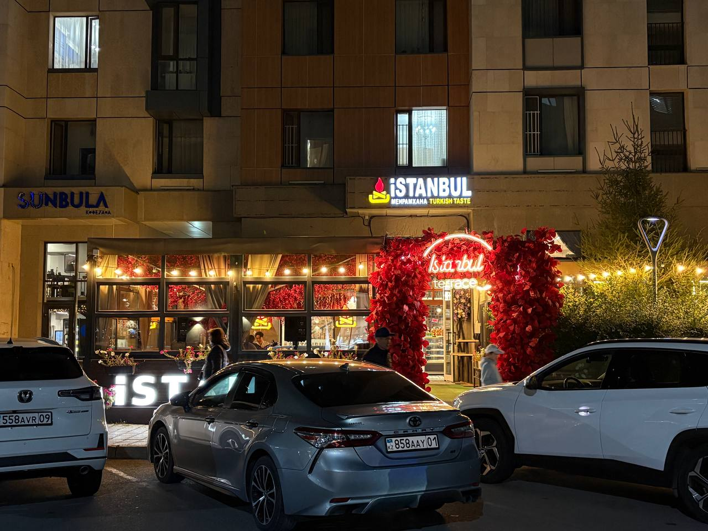
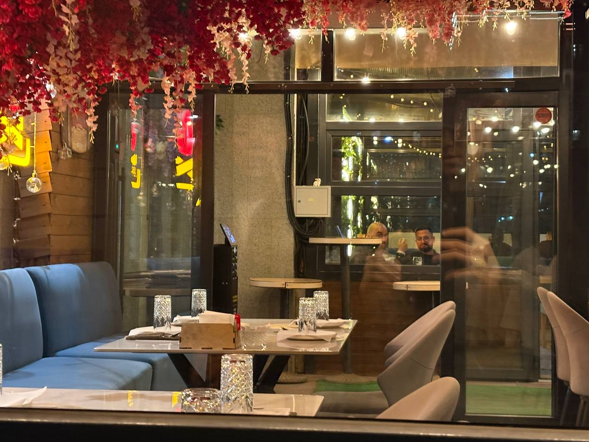
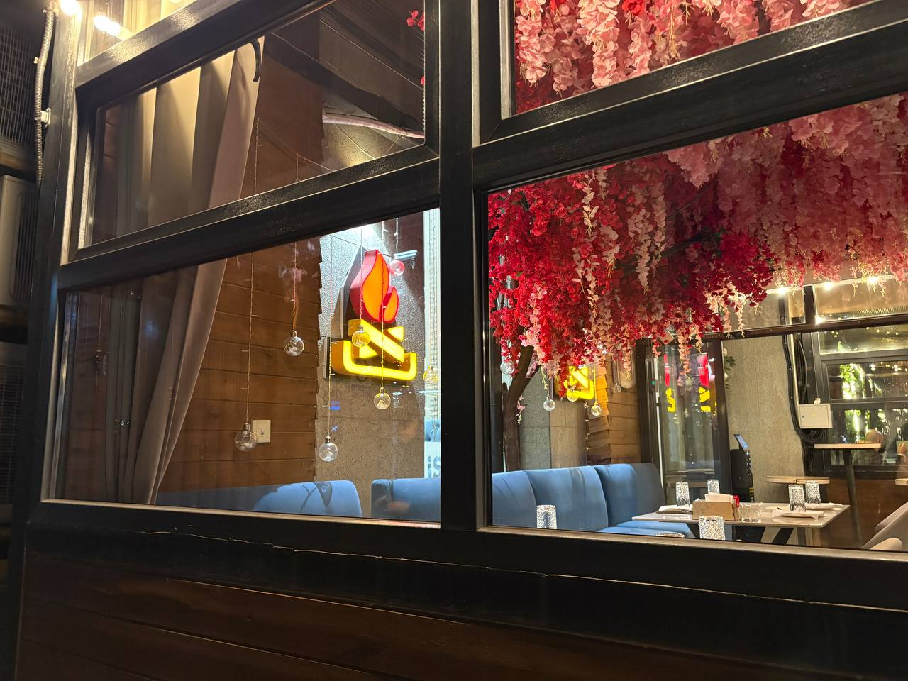
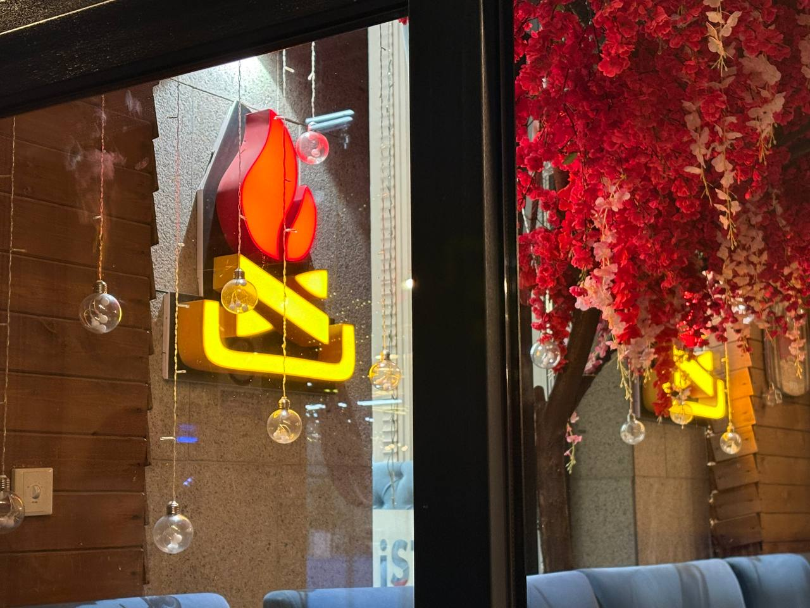
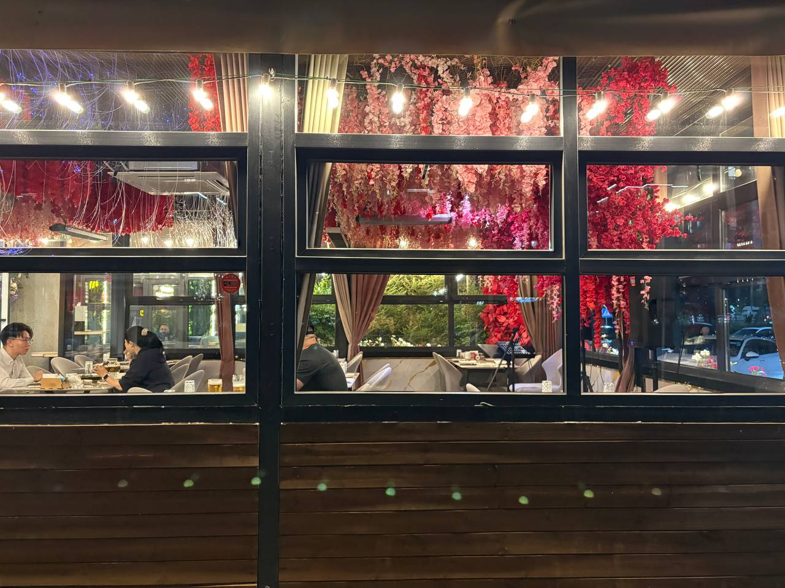
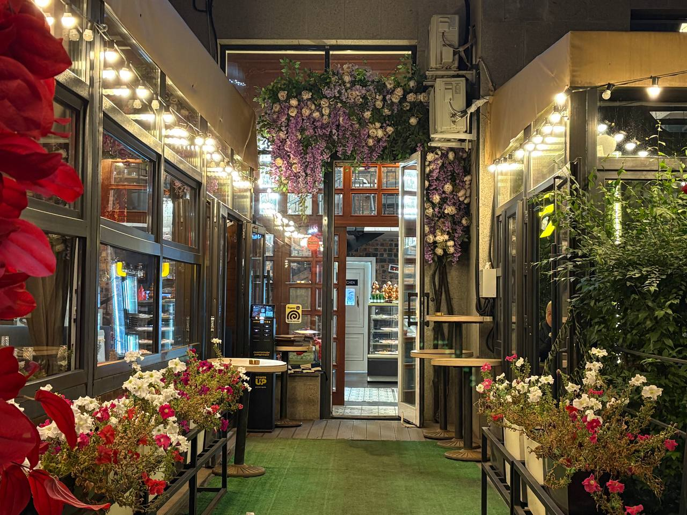
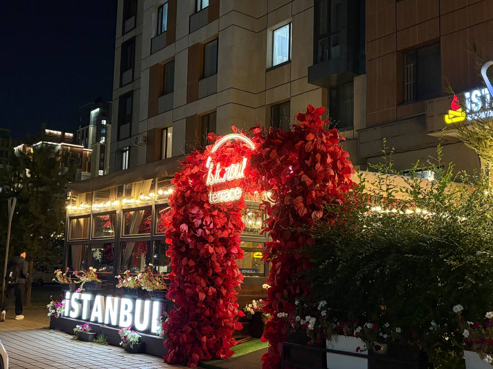
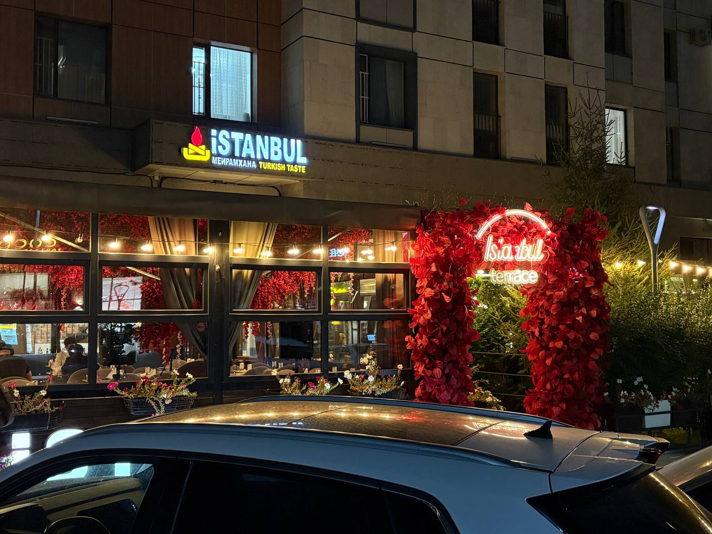

Istanbul atmosphere
Inside and outside
Warm lights, deep red flowers and the bright flame mark make the restaurant easy to recognise both from the street and from a table inside.








Restaurant atmosphere
Warm lights and red flowers
The terrace is decorated with flowers and warm bulbs. Inside, guests find prepared tables, soft seating and the same red-and-yellow flame sign.
Evening visits show the lighting clearly. The red floral arch marks the entrance, while Istanbul Terrace appears in neon. Uly Dala Avenue 56 is the address shown here.
- See the illuminated sign from the street.
- Walk through the flower-covered terrace entrance.
-
Choose a table:
- inside by the windows;
- outside on the terrace.
- Outside
- A summer terrace and a floral arch.
- Inside
- Soft chairs, large windows and warm lighting.
- Address
- Uly Dala Avenue 56, Astana.
An atmospheric place with friendly staff.